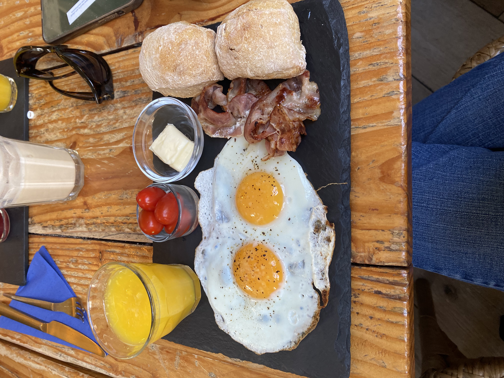
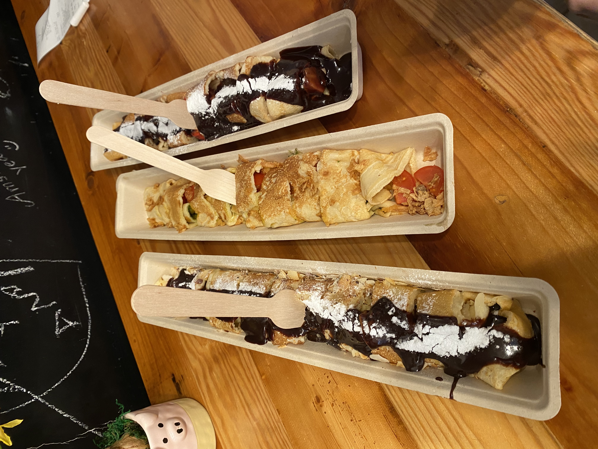
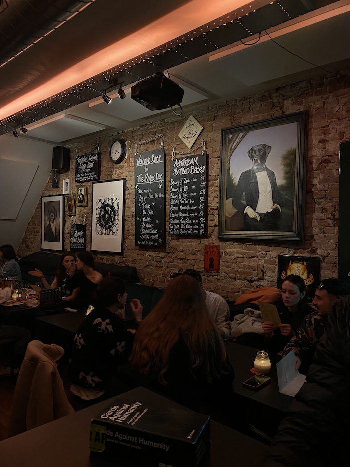
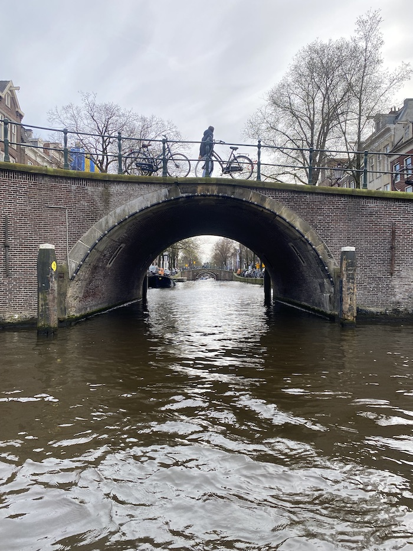
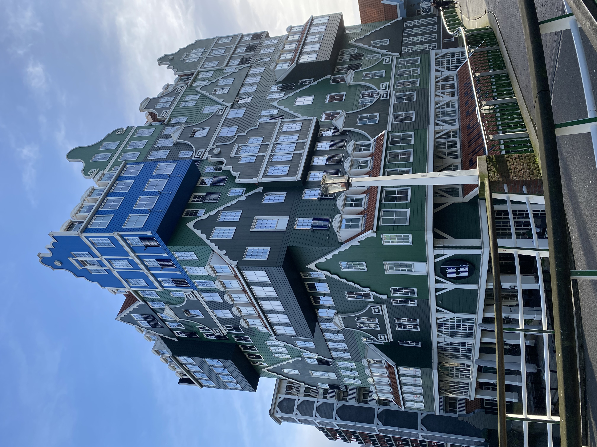
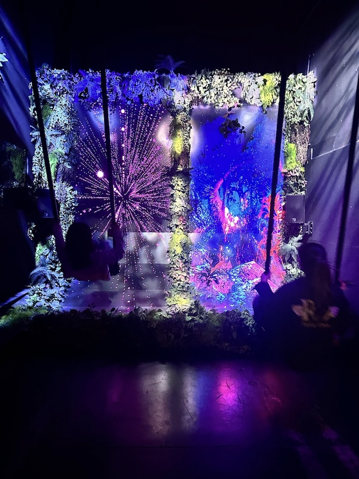

About Amsterdam
Located in the west Netherlands, Amsterdam is not only the capital of the Netherlands but an extraordinarily beautiful city. The city is made up of bridges that overlay the water below and connect narrow roads to create the city’s iconic canals. As a result, there are actually more bikes than people, and what’s more is that there are over 2,000 houseboats that are docked up and down the canals where locals live year-round. However, to be able to live in a houseboat, a permit (with a current 11 year waiting list) is necessary to obtain. The Dutch culture in Amsterdam is also very rich, being admired for its flourishing tulips, mouth-watering stroopwafels, and stunning architecture, such as the Opera House and Zaandam. And because Amsterdam is the only city in Europe to legalize cannabis, it offers an experience unlike anywhere else in the world: its one-of-a-kind coffee shops, where tourists, locals, and passersby alike can engage in recreational marijuana. The people I have met there, in my opinion, have been the kindest of all other European cities I have visited. What was even more surprising to discover was that 95% of the Dutch speak perfect english!
Top 3 restaurants
Cocotte
The Happy Pig Pancake Shop
The Black Dog
Cocotte is a small French creperie located in the city’s center. I would recommend the “country breakfast” which comes with two fried eggs, two baguettes, bacon, cherry tomatoes, and a fresh glass of orange juice – you can’t go wrong!
The Happy Pig Pancake Shop is truly one of a kind. The mom-and-pop shop was small on the inside, but this was certainly not indicative of the size and flavor of the pancakes. As someone who prefers savory foods, I really enjoyed the Orient Express pancakes!
One of the most well-known bar and restaurants, the Black Dog did not disappoint. Despite there being a short queue, my friends and I had a blast enjoying the lively ambiance, and what was unique about this place was that they provided shelves on shelves of games to play!
Top 3 sites
Amsterdam Canals
Zaandam
Amaze Museum
When people think of Amsterdam, many will picture the inteconnecting canals throughout the city. While it is impossible to get around without passing or crossing over a canal, there are several famous locations such as the one pictured below where one could see straight through 7 bridges!
Although not technically in the city of Amsterdam, Zaandam is certainly worth the visit for its food and shopping, but above all, its eccentric architecture. This colorful style of building is the hallmark of the Intel Hotel there (pictured below) in addition to Zaandam's windmills.
Last but certainly not least is the Amaze Museum, located in a warehouse outside of Amsterdam's city centre. The museum experience, which is half guided and half self-led engages all one's senses through visual and interactive exhibits. My favorite exhibits were the laser rooms from the guided portion of the tour and the sensory swings pictured below.
Lauren's personal experience
"This past spring break, I had the privelege of venturing out to Amsterdam with two of my best friends from high school, Justin and Sofia. The first time I visited Amsterdam was when I studied abroad in London last Fall semester and was shocked by the beautiful city and the wonderful people that resided there. Coming back in the Spring, I returned to some of my favorite spots like Cocotte to grab a quick bite. Additionally, Amsterdam has a wide culture and range of options for second-hand shopping, which was one of the highlights for my friends and I!"